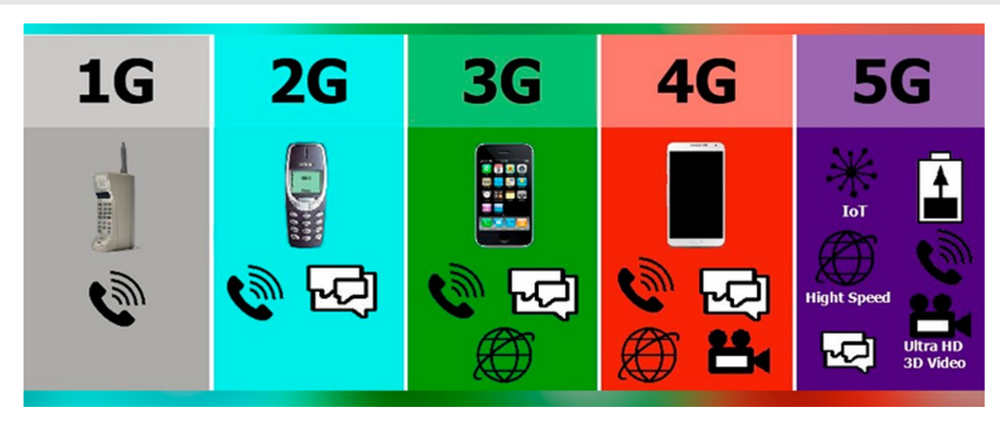

Estamos na era do 5G, a era da hiperconectividade e da indústria 4.0.
Para se falar de 5G, é interessante termos também um conhecimento breve sobre os dados móveis e seu
surgimento. Os
dados móveis surgiram nos anos 80, e passaram por vários avanços ao decorrer dos anos.
Evolução dos dados móveis – do 1G ao 5G
1G : O grande pioneiro nessa história foi o 1G, sendo os dados transmitidos de
maneira analógica, por voz, e surgiu na década de 1980.
Foi o inicio da transmissão por meio de um aparelho sem fio.
2G :Nos anos 90, surge o 2G, que possibilitou, através do GSM (Global System for
Mobile Communications), usarmos o SMS (serviço de mensagens) e MMS (multimidia).
3G :surge nos anos 2000 e alavancou essa grande evolução, permitindo envio de
mensagens de voz, vídeo chamadas e acesso à internet, ainda de maneira bem limitada em comparação com o que
temos hoje.
Nessa geração os smartphones se popularizaram e onde encontramos o primeiro celular com Sistema Operacional
Android, em 2009.
Foi com ele que as redes sociais passaram a serem utilizada de maneira massiva.
4G :aparece em 2010 e ainda amplamente utilizado no Brasil. Mais rápido que o 3G,
este prioriza o tráfego de dados e não o de chamadas, facilitando compartilhamento de imagens, vídeos,
áudios,
além da ascensão dos serviços de streaming e conexão em tempo real, o que possibilitou o surgimento, por
exemplo, da Uber.
Esse avanço transformou o celular em um pequeno computador de mão.
5G :a grande evolução do 4G, que promete alavancar uma mudança gigantesca na forma
como consumimos a internet, fazendo com que iniciemos a chamada era da Hiperconectividade. Surgiu no
final de 2018,
e foi implementado a principio na Coreia do Sul, em 2019 (apenas em julho de 2022 no Brasil) com uma
transmissão de dados muito mais rápida que o 4G, além de possuir uma baixa latência (tempo de resposta),
permitindo que os objetos smarts estejam cada vez mais presentes em nossas vidas.

"Evolução das redes móveis". Fonte: Eletrojun
O que esperar com a evolução do 5G?
Por meio da internet das coisas e inteligência artificial, entramos na 4ª Revolução industrial, havendo um
grande aumento na customização dos produtos, eficiência e grande aumento na automação.
O 5G é imperativo para a automação industrial, inteligência artificial e machine learning, contando com
baixissima latência, alta cobertura e baixo consumo de bateria. Isso tudo irá permitir o avanço dos carros
autônomos, cirurgias remotas, controle remoto de maquinário industrial e o avanço das cidades inteligentes,
aumento da produção em diversos setores, entre outras coisas. Até 2028, espera-se que 85% da população
mundial tenha cobertura 5G.
Um dos maiores desafios das empresas criadoras de sistemas operacionais se dará a necessidade de criação de
sistemas mais seguros, pois como o 5G está ligado a um número muito maior de conexões, integram máquinas
inteligentes e o volume e velocidade de transmissão de dados em relação ao 4G é muito superior, o que acaba
deixando os sistemas mais abertos a ataques e invasões. Uma falta de padrão de segurança poderia acarretar
invasões fora de controle e violações de rede.
"Smart Cities". Fonte: Iberdola
5G e a área da programação
O mercado de Plataforma de Comunicação como Serviço (CPaaS) está crescendo rapidamente, oferecendo
ferramentas para integrar recursos de comunicação, como SMS, chat e chamadas de vídeo, em softwares
diversos. O CPaaS tem aplicações variadas, incluindo automação de lembretes em saúde, serviços sem contato
físico (apenas com uso de aplicativos), recursos de aprendizado online, entre outras coisas.
A abertura das redes 5G para desenvolvedores por meio de APIs oferece um vasto potencial para inovação, novos
serviços e modelos de negócios diferenciados, impulsionando a transformação digital em várias indústrias.
Com a expansão das redes 5G, a exposição de recursos 5G por meio de APIs oferece oportunidades para novos
serviços, como realidade estendida (XR) móvel, aplicativos de rede 5G privados e IoT de baixa latência.
As APIs 5G têm um grande potencial para novos serviços, como aprimoramento de qualidade de serviço (QoS) para
jogos móveis, gerenciamento de drones, autenticação de transações financeiras e muito mais.
Conclusão
O 5G ainda tem uma baixa cobertura no Brasil, porém com o avanço dos anos e da tecnologia, essa cobertura deverá ser maior.
O avanço do 5G deverá aumentar a demanda por desenvolvedores, visto que também veremos a evolução e crescimento em diversas áreas como computação na nuvem, aumento na utilização de aplicativos não apenas em smartphones, o avanço do machine learning, inteligência artificial, crescimento das cidades inteligentes e automação industrial.
A cyber segurança também será primordial, uma vez que os dados de todos estarão cada vez mais espalhados pela rede. Estamos entrando em uma época onde tudo estará conectado.
Referências Bibliograficas
5G, bem-vindos à era da hiperconectividade!
Iberdola Disponível em: Vantagens do 5G . Acesso em 15/08/2023
Saboia, Luciano; Rojas, AudryA era do 5G chegou! O que isto muda?Radar do Furuto . Disponível em: A era do 5G chegou, o que isso muda? . Acesso em: 15/08/2023.
Evolução da internet móvel: conheça as etapas que levaram à poderosa conectividade 5G.Vivo,2021 Disponivel em A evolução da Internet Móvel Acesso em 16/08/2023